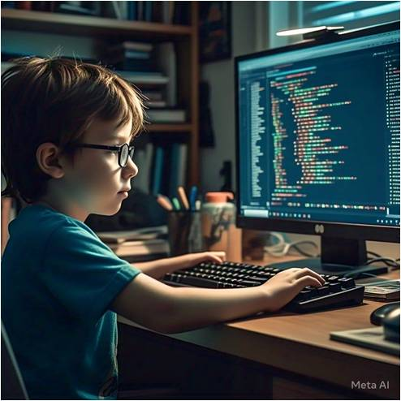

Bienvenidos a LITTLE PROGRAMMERS 🚀
Este espacio está dedicado al mundo de la programación y bases de datos, abordando los temas clave que se estudian en la carrera de informática. Nuestro enfoque principal es la programación, explorando desde los fundamentos y buenas prácticas.
¡Acompáñanos en este viaje de aprendizaje y desarrollo!
Objetivo
Desarrollar sistemas informáticos con lenguajes de programación y base de datos, aplicando
diferentes metodologías según los requerimientos de funcionalidad.
Misión
En little programmers nuestra misión es ofrecer un espacio de aprendizaje accesible y
amigable para aquellos que están comenzando su camino en la programación y bases de datos.
A través de contenidos y recursos fáciles de entender, buscamos fortalecer los conocimientos fundamentales y
ayudar a los estudiantes a desarrollar las habilidades necesarias para avanzar en el mundo de la tecnología.
Visión
Convertirnos en un punto de apoyo para estudiantes que inician su formación en programación y
bases de datos, proporcionando un entorno donde puedan crecer, aprender de manera práctica y
sentirse motivados para seguir desarrollándose en el campo tecnológico con confianza.